并发控制：条件变量和万能同步方法
课程：2026 春季学期《操作系统原理》
讲师：蒋炎岩（jyy）
官方课程主页：https://jyywiki.cn/OS/2026/
官方讲义：https://jyywiki.cn/OS/2026/lect15.md
视频来源：Bilibili BV1t3dQBAEzd
版权说明：课程讲义与幻灯片归蒋炎岩所有，采用 Creative Commons BY-NC 4.0 许可；本电子书是对课堂讲授的书面化重构，保留出处与许可说明。
导语：从“不能同时做”到“必须按顺序做”
(参考时间: 00:00)
前面的并发路线已经建立了两块基础：
spawn/join创建和等待线程；mutex_lock/mutex_unlock保护临界区，解决sum++丢失更新。
互斥给出的保证是：
要么 A → B
要么 B → A
但很多问题需要更强、更确定的顺序：
必须 A → B
例如：
- 所有计算线程结束后，
join才能返回； - 指挥给出下一拍后，乐手才能演奏；
- 生产者先放入对象，消费者之后才能取出；
- 计算图中所有前驱节点完成后，当前节点才能开始。
这就是 同步（synchronization）。它通过等待条件、实现握手，建立确定的 happens-before 关系。
flowchart LR
A["异步：各自向前执行"] --> B["约定同步条件"]
B --> C["先到达者等待"]
C --> D["条件满足，形成同步点"]
D --> E["建立 happens-before"]
E --> F["再各自分叉执行"]
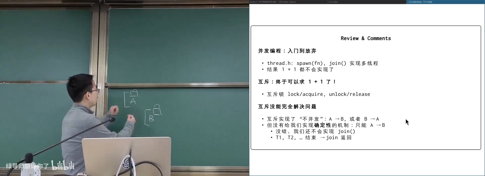
📷 回顾互斥锁提供的串行化与可见性
回到原视频 (00:02:10)
1. 同步的本质
1.1 join 就是一个同步机制
(参考时间: 00:03)
创建线程：
spawn(T1);
spawn(T2);
spawn(T3);
join();
printf("sum = %ld\n", sum);
join 返回时满足：
- 所有被等待线程已结束；
- 这些线程对共享内存的写对当前线程可见；
join之后的代码 happens-after 所有目标线程。
所以库函数 join 本身也可以由同步原语实现。它的同步条件是：
仍在运行的线程数量 == 0
flowchart TD
M["主线程 spawn T1/T2/T3"] --> W["等待所有线程结束"]
T1["T1 结束"] --> W
T2["T2 结束"] --> W
T3["T3 结束"] --> W
W --> R["join 返回"]
R --> P["安全读取共享结果"]
📷 `join` 实现“所有线程结束后主线程再继续”
回到原视频 (00:03:30)
1.2 异步与同步
(参考时间: 00:04)
把线程想象成人，把共享内存想象成物理空间：
- 异步：每个人各自行动，不知道彼此进度；
- 同步：多个变化过程在某个时刻保持确定关系。
现实中的同步方式：
- 同步电机：磁场锁定；
- 同步电路：时钟上升沿；
- 人：约定 wall-clock time；
- 外卖：送达通知；
- 不见不散：双方在指定位置握手。
物理世界可以用时间和空间实现同步，但线程内部没有自然时间概念。等待同步条件时，也不能让 CPU 一直空转。
flowchart TD
A["多个异步实体"] --> B["约定同步事件"]
B --> C{"事件已发生？"}
C -- "否" --> D["等待"]
D --> C
C -- "是" --> E["达成同步点"]
E --> F["继续各自执行"]
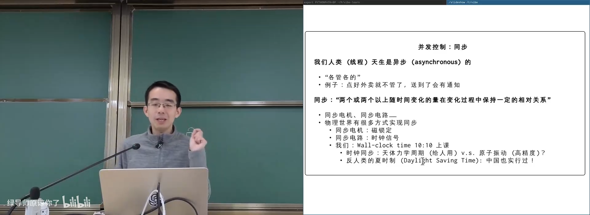
📷 从异步到同步：多个独立执行流建立相对关系
回到原视频 (00:04:30)
1.3 同步电路与乐团
(参考时间: 00:06)
同步电路的触发器等待时钟上升沿：
while (!posedge(clk)) {
/* await */
}
ff_out = ff_in;
乐团演奏则等待指挥给出的下一拍：
wait_for_beat();
play_note();
人耳对节奏不同步的容忍大约只有 20 到 30 毫秒。对现代 CPU，这已经是上亿条指令的时间，因此软件线程之间无法依赖“感觉同时发生”。
flowchart LR
A["指挥挥拍"] --> B["发出同步信号"]
B --> C["所有演奏线程条件成立"]
C --> D["同时进入下一拍"]
D --> E["各自演奏音符"]
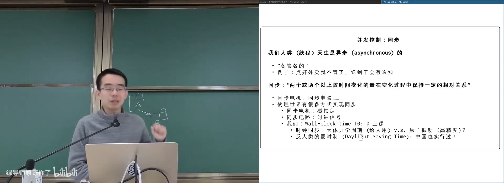
📷 同步电路、乐团与程序线程的共同等待模式
回到原视频 (00:06:40)
1.4 所有例子都在实现握手
(参考时间: 00:09)
几个看似不同的场景都遵循同一模式：
等待某个条件发生
如果现在没有发生，就等待
一定有另一个操作会使它发生
条件满足后继续
| 场景 | 同步条件 |
|---|---|
| 同步电路 | 时钟上升沿到来 |
join |
所有线程结束 |
| 不见不散 | 对方到达 |
| 乐团 | 指挥发出下一拍 |
| 生产者消费者 | 有对象 / 有空位 |
flowchart TD
A["先到达的线程"] --> B["检查同步条件"]
B --> C{"条件成立？"}
C -- "否" --> D["等待"]
D --> B
E["另一线程使条件成立"] --> B
C -- "是" --> F["继续执行"]
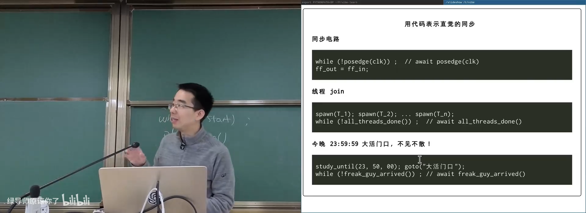
📷 同步点建立全局可见、容易理解的状态
回到原视频 (00:11:00)
1.5 Happens-before
(参考时间: 00:14)
同步点给程序建立了一个确定的全局状态：
条件发生 → 后续代码
例如：
- 时钟上升沿 happens-before 触发器更新；
- 最后一个线程结束 happens-before
join返回； - 生产者放入对象 happens-before 消费者取出；
- 所有前驱节点完成 happens-before 当前 DAG 节点开始。
flowchart LR
A["事件 A"] -->|"happens-before"| S["同步点"]
S -->|"happens-before"| B["事件 B"]
A --> M["A 对共享内存的写可见"]
M --> B
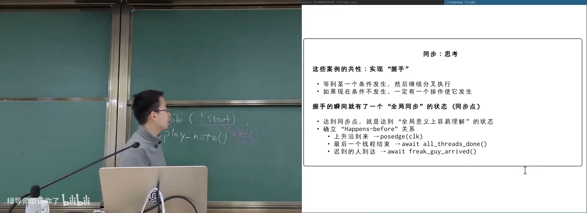
📷 同步点为并发执行建立确定的时间隔断
回到原视频 (00:14:30)
2. 用自旋等待实现同步
2.1 乐团版本
(参考时间: 00:17)
可以用共享变量表示当前节拍：
int beat = 0;
mutex_t lk = MUTEX_INIT();
void player(int tid) {
while (1) {
int my_beat;
mutex_lock(&lk);
while (beat == last_played) {
mutex_unlock(&lk);
mutex_lock(&lk);
}
my_beat = beat;
mutex_unlock(&lk);
play_note(tid, my_beat);
}
}
这实现了同步，但等待线程不断获得、检查、释放锁，本质是 自旋等待。
flowchart LR
A["乐手线程"] --> B["lock"]
B --> C["检查 beat 是否更新"]
C -- "否" --> D["unlock"]
D --> E["再次 lock"]
E --> C
C -- "是" --> F["演奏音符"]
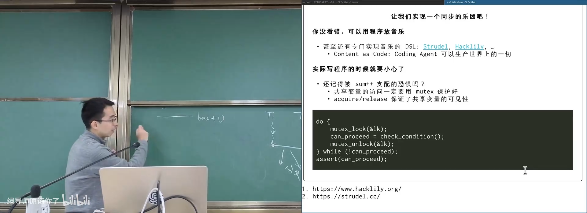
📷 乐团在线程中等待指挥的下一拍
回到原视频 (00:17:20)
2.2 自旋等待的问题
(参考时间: 00:23)
如果同步条件可能几分钟甚至几天后才成立，不断检查就是浪费 CPU：
- 占着处理器但无有效工作；
- 产生缓存一致性和调度开销；
- 无法把 CPU 让给真正需要运行的线程。
理想行为是：
- 条件不成立；
- 原子地释放锁；
- 让线程睡眠；
- 条件可能成立时唤醒。
flowchart TD
A["条件不成立"] --> B["自旋循环"]
B --> C["反复读共享状态"]
C --> D["浪费 CPU 与缓存带宽"]
D --> B
A --> E["理想的睡眠等待"]
E --> F["条件成立后唤醒"]
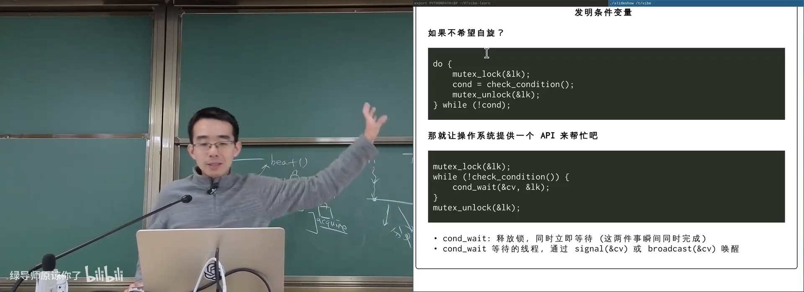
📷 同步条件是长期事件时，自旋等待浪费 CPU
回到原视频 (00:25:30)
3. 条件变量
3.1 cond_wait 的核心思想
(参考时间: 00:26)
标准模板：
mutex_lock(&lk);
while (!sync_condition()) {
cond_wait(&cv, &lk);
}
assert(sync_condition());
mutex_unlock(&lk);
cond_wait(cv, lk) 原子地完成：
- 释放
lk； - 把当前线程放入
cv的等待队列并睡眠。
当线程被唤醒时，cond_wait 返回前必须重新获得 lk。
sequenceDiagram
participant W as Waiting Thread
participant M as Mutex
participant Q as Condition Queue
W->>M: lock
W->>W: condition false
W->>M: unlock as part of wait
W->>Q: sleep on condition
Note over Q: another thread signals
Q-->>W: wake
W->>M: reacquire lock
W->>W: check condition again
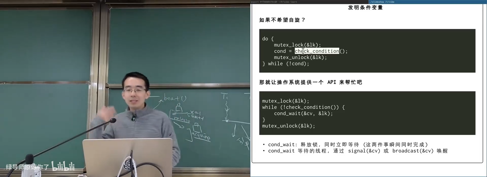
📷 条件变量让等待线程睡眠并自动重获锁
回到原视频 (00:26:30)
3.2 wait 释放锁与睡眠必须原子
(参考时间: 00:28)
如果“释放锁”和“进入睡眠”之间能被插入：
- 等待线程释放锁；
- 另一个线程修改条件并发出唤醒；
- 唤醒丢失；
- 原线程才真正睡下；
- 它可能永远不再被唤醒。
因此条件变量实现必须保证这两个动作对同步协议来说是原子的。
sequenceDiagram
participant W as Waiter
participant R as Waker
W->>W: unlock
R->>R: condition becomes true
R->>W: signal
Note over W: 还未真正睡眠，信号丢失
W->>W: sleep forever
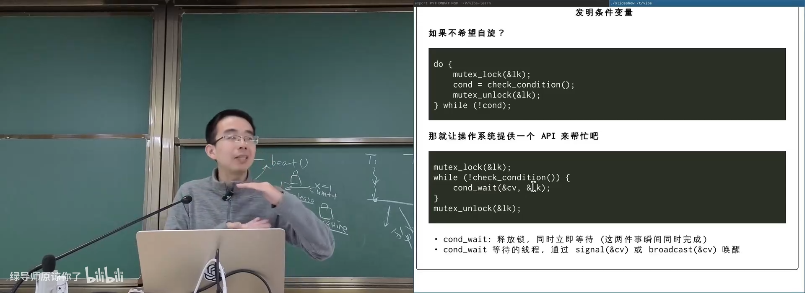
📷 `wait` 必须原子地释放锁并进入睡眠
回到原视频 (00:28:10)
3.3 Signal 与 Broadcast
(参考时间: 00:29)
唤醒操作：
cond_signal(cv)：唤醒等待队列中的一个线程；cond_broadcast(cv)：唤醒等待队列中的所有线程。
broadcast 可能唤醒条件仍不满足的线程，但它们会重新检查 while 条件并再次睡眠。
flowchart TD
A["状态可能使条件成立"] --> B{"选择唤醒策略"}
B -- "signal" --> C["唤醒一个等待者"]
B -- "broadcast" --> D["唤醒所有等待者"]
C --> E["被唤醒者重新检查条件"]
D --> E
E --> F{"条件成立？"}
F -- "是" --> G["继续"]
F -- "否" --> H["再次 wait"]
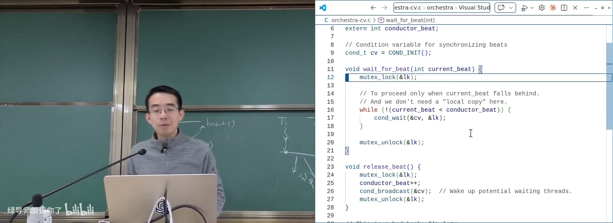
📷 `signal` 与 `broadcast` 唤醒条件变量上的等待者
回到原视频 (00:30:30)
3.4 万能模板
(参考时间: 00:31)
修改共享状态并唤醒：
mutex_lock(&lk);
/* 修改可能使 sync_condition() 成立的共享状态 */
cond_broadcast(&cv);
mutex_unlock(&lk);
等待条件：
mutex_lock(&lk);
while (!sync_condition()) {
cond_wait(&cv, &lk);
}
assert(sync_condition());
mutex_unlock(&lk);
这套模板被称为“万能”，因为它适用于任意复杂的同步条件。
flowchart TD
A["先问：线程继续执行的条件是什么？"] --> B["用共享状态表达条件"]
B --> C["等待方：lock + while + wait"]
C --> D["唤醒方：lock + 修改状态 + broadcast + unlock"]
D --> E["条件成立者继续，其他人重新等待"]
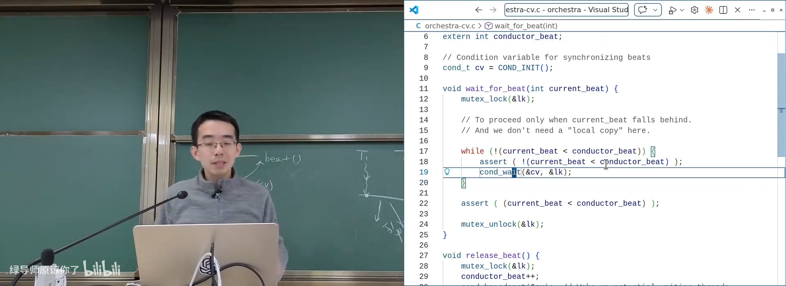
📷 条件变量万能模板：while 检查、broadcast 唤醒
回到原视频 (00:31:30)
3.5 为什么必须是 while，不能是 if
(参考时间: 00:32)
被唤醒不等于条件一定成立：
broadcast会唤醒不满足条件的线程；- 多个等待者可能在竞争同一对象；
- 另一个线程可能先抢到锁并消耗条件；
- 可能出现虚假唤醒。
while 的语义保证：
退出循环时持有锁，且条件在持有锁的状态下成立。
flowchart TD
A["线程被唤醒并重新获得锁"] --> B["再次检查条件"]
B --> C{"条件成立？"}
C -- "是" --> D["安全进入临界操作"]
C -- "否" --> E["再次 wait"]
E --> A
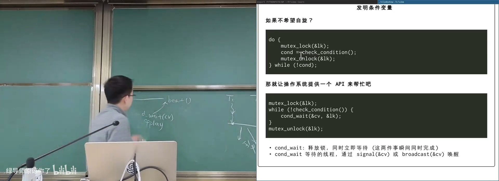
📷 `while` 保证退出等待时条件与锁同时成立
回到原视频 (00:32:10)
3.6 用条件变量实现 join
(参考时间: 00:34)
共享状态：
int running_threads = 0;
mutex_t lk = MUTEX_INIT();
cond_t cv = COND_INIT();
创建线程时：
mutex_lock(&lk);
running_threads++;
mutex_unlock(&lk);
线程退出时：
mutex_lock(&lk);
running_threads--;
cond_broadcast(&cv);
mutex_unlock(&lk);
等待线程：
mutex_lock(&lk);
while (running_threads != 0) {
cond_wait(&cv, &lk);
}
mutex_unlock(&lk);
flowchart LR
A["spawn：threads++"] --> B["运行线程"]
B --> C["退出：threads--"]
C --> D["broadcast(cv)"]
E["join：while threads != 0"] --> F["cond_wait(cv, lk)"]
D --> G["join 重新检查并返回"]
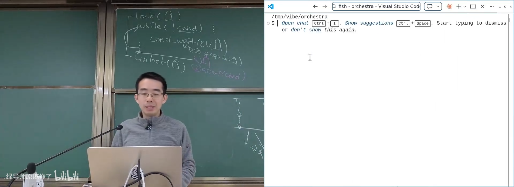
📷 用共享计数器和条件变量实现 `join`
回到原视频 (00:34:50)
4. 生产者消费者
4.1 经典模型
(参考时间: 00:38)
共享一个有界缓冲区：
void produce(Object obj);
Object consume(void);
生产者：
- 缓冲区有空位时放入对象；
- 缓冲区满时等待。
消费者：
- 缓冲区有对象时取走；
- 缓冲区空时等待。
该模型可以表示 scheduler–worker、HTTP gateway–backend、任务队列等大量系统。
flowchart LR
P1["Producer 1"] --> Q["有界缓冲区"]
P2["Producer 2"] --> Q
Q --> C1["Consumer 1"]
Q --> C2["Consumer 2"]
P1 -->|"有空间才放入"| Q
Q -->|"有对象才取出"| C1
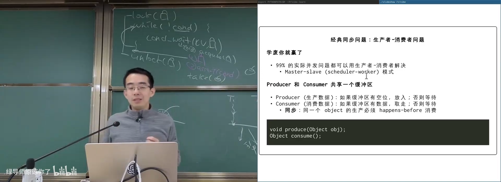
📷 生产者消费者共享有界缓冲区
回到原视频 (00:38:30)
4.2 简化为括号序列
(参考时间: 00:42)
可以把生产对象看作打印左括号，消费对象看作打印右括号：
void producer(int tid) {
printf("(");
}
void consumer(int tid) {
printf(")");
}
约束：
- 任意前缀中，右括号不能多于左括号；
- 当前嵌套深度不能超过缓冲区大小
n； - 最终括号应当配对。
例如 n = 3：
((())())((( ✅
(((()))), (())) ❌
flowchart TD
A["打印 '('"] --> B["深度 d++"]
C["打印 ')'"] --> D["深度 d--"]
B --> E{"d <= n 且最终配对？"}
D --> E
E -- "是" --> F["合法运行"]
E -- "否" --> G["超过容量或右括号非法"]
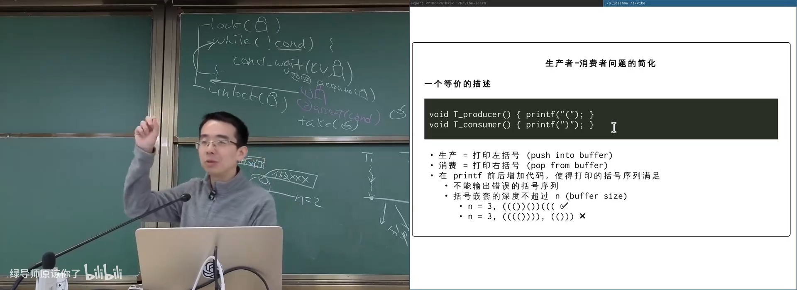
📷 用括号序列直观表示有界缓冲区
回到原视频 (00:42:30)
4.3 同步条件
(参考时间: 00:43)
生产者可以继续的条件：
depth < n
消费者可以继续的条件：
depth > 0
生产者更新共享状态：
mutex_lock(&lk);
while (!(depth < n)) {
cond_wait(&cv, &lk);
}
assert(depth < n);
depth++;
printf("(");
cond_broadcast(&cv);
mutex_unlock(&lk);
消费者：
mutex_lock(&lk);
while (!(depth > 0)) {
cond_wait(&cv, &lk);
}
assert(depth > 0);
depth--;
printf(")");
cond_broadcast(&cv);
mutex_unlock(&lk);
flowchart TD
P["Producer"] --> PC{"depth < n？"}
PC -- "否" --> PW["cond_wait"]
PW --> PC
PC -- "是" --> PI["depth++ / 放入对象"]
C["Consumer"] --> CC{"depth > 0？"}
CC -- "否" --> CW["cond_wait"]
CW --> CC
CC -- "是" --> CI["depth-- / 取出对象"]
PI --> BC["broadcast"]
CI --> BC
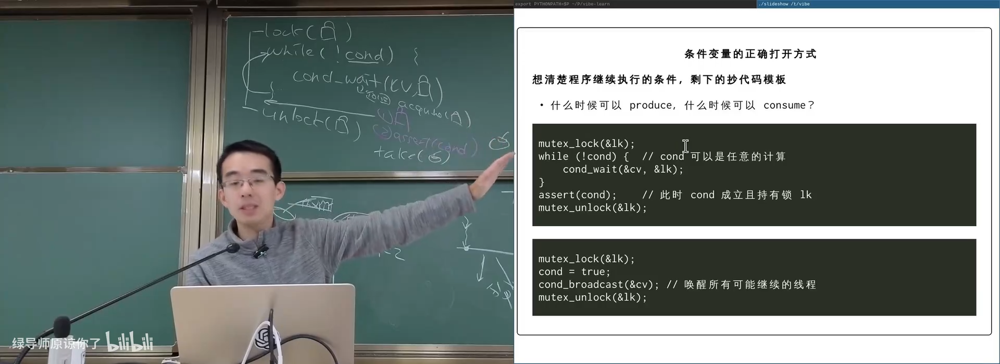
📷 生产者和消费者只等待各自的缓冲区条件
回到原视频 (00:44:10)
4.4 检查器验证
(参考时间: 00:47)
打印序列可以通过简单检查器验证：
depth = 0
for ch in sys.stdin.read():
if ch == "(":
depth += 1
elif ch == ")":
depth -= 1
assert 0 <= depth <= n
运行程序并长期检查输出，可以辅助发现明显协议错误。但它不能替代形式化证明，也不能保证所有执行交错都被覆盖。
flowchart LR
A["并发程序输出括号流"] --> B["Check.py"]
B --> C["维护 depth"]
C --> D{"0 <= depth <= n？"}
D -- "是" --> E["继续检查"]
D -- "否" --> F["报告非法运行"]
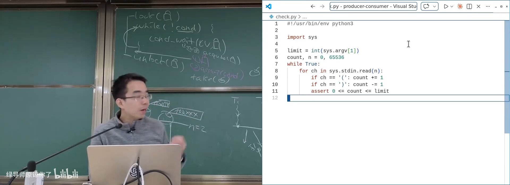
📷 用独立检查器验证括号深度与配对
回到原视频 (00:48:20)
4.5 把 broadcast 改成 signal 的危险
(参考时间: 00:49)
一个生产者唤醒等待者时，若使用 cond_signal：
- 可能唤醒生产者，而不是消费者；
- 被唤醒的生产者发现缓冲区仍满，重新睡眠；
- 真正可以继续的消费者仍在等待；
- 系统可能停滞。
sequenceDiagram
participant C as Consumer
participant P as Producer
participant CV as Condition
C->>CV: wait because depth = 0
P->>P: depth++
P->>CV: signal
CV-->>P: wakes another producer
P->>CV: full, wait again
Note over C: Consumer still asleep
课堂建议先用 broadcast 建立绝对正确性；确认性能瓶颈后，再考虑更精确的唤醒策略。
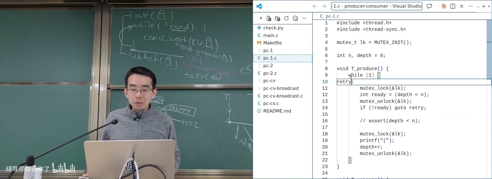
📷 错误的 `signal` 可能唤醒同类线程导致停滞
回到原视频 (00:50:20)
4.6 while + broadcast 是安全起步
(参考时间: 00:51)
两个基础动作：
- 所有等待使用
while (!condition)； - 任何可能使条件成立的共享状态变更后使用
broadcast。
可能多唤醒一些线程，但正确性容易保证。性能优化应建立在正确实现和测量之上。
flowchart TD
A["等待者"] --> W["while (!condition) cond_wait"]
B["状态修改者"] --> M["修改共享状态"]
M --> C["cond_broadcast"]
W --> R["重新检查条件"]
C --> R
R --> S{"成立？"}
S -- "是" --> T["继续"]
S -- "否" --> W
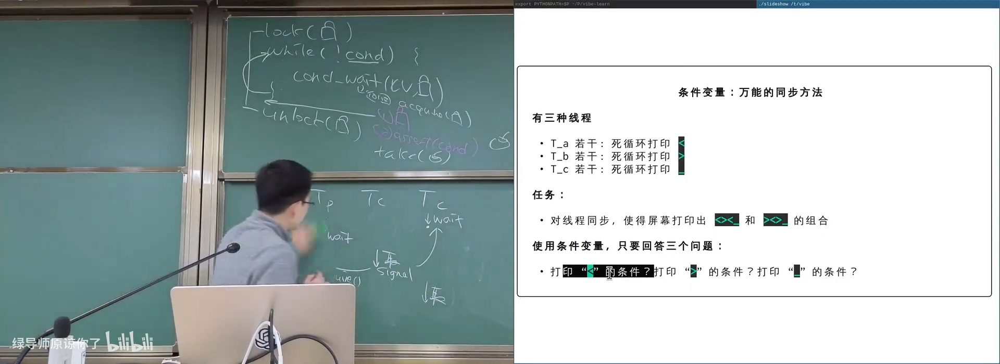
📷 万能安全策略：`while` 等待配合 `broadcast` 唤醒
回到原视频 (00:51:30)
5. 更奇怪的同步问题：括号鱼
5.1 水分子问题
(参考时间: 00:52)
类似生成水分子的同步问题：
- 两个氢线程、一个氧线程组成一个水分子；
- 任意时刻不能出现超过两个氢或超过一个氧等待；
- 分子完整后一起继续。
这比普通生产者消费者有更复杂的全局条件。
flowchart TD
H1["H thread"] --> S["水分子同步状态"]
H2["H thread"] --> S
O["O thread"] --> S
S --> R{"H=2 且 O=1？"}
R -- "否" --> W["等待"]
R -- "是" --> G["组成水分子并继续"]
5.2 用字符打印两条“鱼”
(参考时间: 00:52)
三种线程分别打印：
<
>
_
任务要求输出始终由两种合法模式组成：
<><_
><>_
即两个方向的鱼形图案。
stateDiagram-v2
[*] --> A
A --> B: print "<"
B --> C: print ">"
C --> D: print "<"
D --> A: print "_"
A --> E: print ">"
E --> F: print "<"
F --> D: print ">"
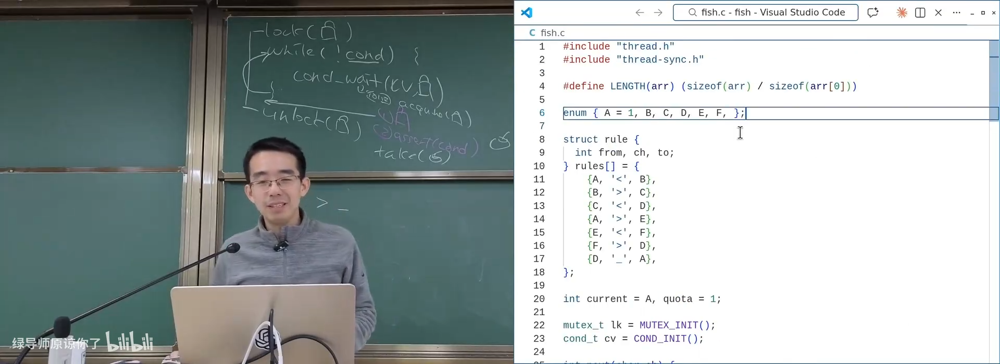
📷 用状态机描述左右两条括号鱼
回到原视频 (00:54:20)
5.3 条件变量解决方案
(参考时间: 00:55)
共享：
char current_state = 'A';
int printing = 0;
线程能继续的条件是：
当前允许打印该字符
且没有其他线程正在打印
每个线程等待自己对应状态：
mutex_lock(&lk);
while (!(can_print(my_char, current_state) && !printing)) {
cond_wait(&cv, &lk);
}
printing = 1;
printf("%c", my_char);
current_state = next_state(current_state, my_char);
printing = 0;
cond_broadcast(&cv);
mutex_unlock(&lk);
flowchart TD
A["线程持有锁"] --> B{"当前状态允许我打印？"}
B -- "否" --> C["cond_wait"]
C --> B
B -- "是" --> D{"没有其他打印者？"}
D -- "否" --> C
D -- "是" --> E["打印字符"]
E --> F["更新状态机"]
F --> G["broadcast"]
G --> H["unlock"]
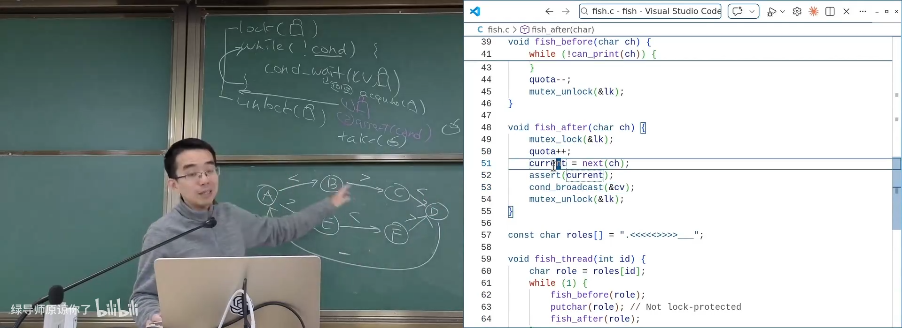
📷 把同步条件直接编码为字符与状态的关系
回到原视频 (00:56:40)
5.4 “万能”的含义
条件变量并没有为每种问题提供专用 API。通用步骤只有：
- 找到共享状态；
- 写出线程继续所需的条件；
- 用
while + wait等待； - 改变状态后
broadcast； - 被唤醒后持有锁重新检查。
flowchart LR
A["识别共享状态"] --> B["定义同步条件"]
B --> C["等待：while + wait"]
B --> D["唤醒：修改状态 + broadcast"]
C --> E["条件成立，持有锁继续"]
D --> E
6. 计算图：通用并行模型
6.1 有向无环图
(参考时间: 00:58)
计算图 G(V, E)：
- 节点表示计算任务；
- 边
u → v表示v依赖u的结果； - 必须是 DAG，不能有依赖环；
- 边同时代表 happens-before 关系。
节点完成时，它对共享内存的写必须对后继节点可见。
flowchart LR
A["节点 u"] -->|"依赖"| B["节点 v"]
A -->|"共享结果可见"| M["共享内存"]
M --> B
B --> C["节点 w"]
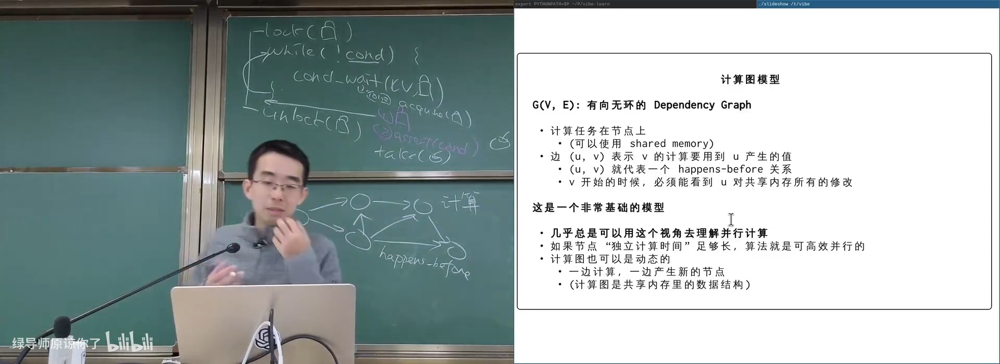
📷 DAG 节点表示计算，边表示依赖与 happens-before
回到原视频 (00:59:30)
6.2 无处不在
(参考时间: 01:00)
计算图模型可以描述：
- 神经网络的数据流与 autograd；
- Makefile 的编译依赖；
- 电路模拟；
- 动态规划；
- 任务的动态生成；
- 编译、构建、工作流和数据流水线。
如果每个节点的独立计算时间足够长，图管理开销可以忽略。
flowchart TD
A["DAG 计算模型"] --> B["神经网络"]
A --> C["Makefile"]
A --> D["电路仿真"]
A --> E["动态规划"]
A --> F["任务工作流"]
A --> G["动态任务生成"]
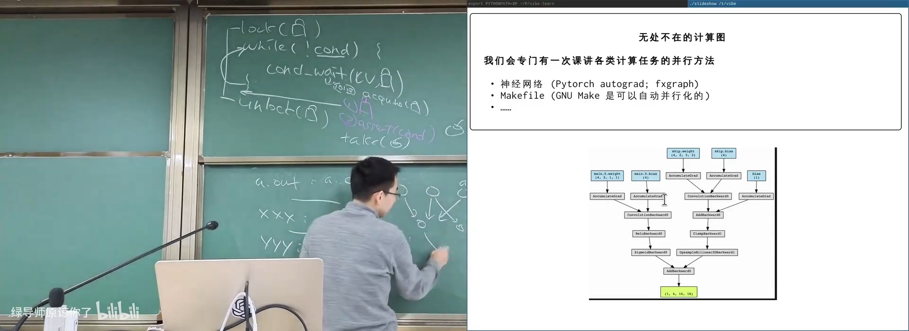
📷 神经网络与 Makefile 都可以视为 DAG
回到原视频 (01:02:30)
6.3 最长公共子序列
(参考时间: 01:03)
动态规划 dp[i][j] 的每个状态依赖：
dp[i-1][j]
dp[i][j-1]
dp[i-1][j-1]
因此二维表格可以看成 DAG：
- 节点是
dp[i][j]； - 边表示计算依赖；
- 同一对角线上的状态可能互相独立；
- 可以按层次并行计算。
flowchart TD
A["dp[i-1][j-1]"] --> D["dp[i][j]"]
B["dp[i-1][j]"] --> D
C["dp[i][j-1]"] --> D
D --> E["下一层状态"]
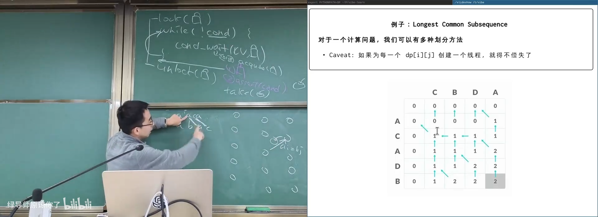
📷 最长公共子序列的二维依赖图
回到原视频 (01:04:30)
7. 实现任意计算图
7.1 方法一：每个节点一个线程和条件变量
(参考时间: 01:06)
struct node {
int pending;
mutex_t lk;
cond_t cv;
};
完成节点 u 后，通知所有后继：
for (v in successors(u)) {
mutex_lock(&v->lk);
v->pending--;
cond_signal(&v->cv);
mutex_unlock(&v->lk);
}
节点 v 等待所有前驱：
mutex_lock(&v->lk);
while (v->pending != 0) {
cond_wait(&v->cv, &v->lk);
}
mutex_unlock(&v->lk);
compute(v);
flowchart TD
U["u 完成"] --> V["v.pending--"]
W["w 完成"] --> V
V --> C{"v.pending == 0？"}
C -- "否" --> X["继续等待"]
C -- "是" --> S["signal(v.cv)"]
S --> Y["v 开始计算"]
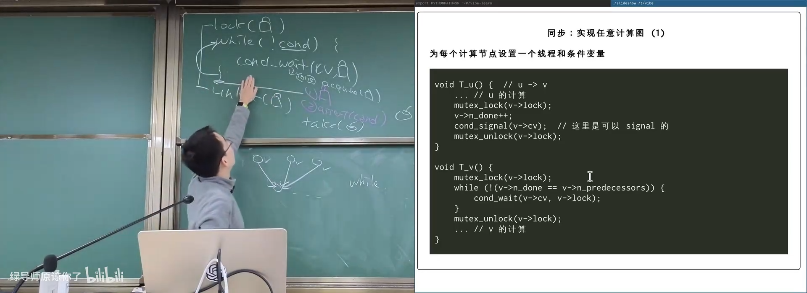
📷 每个 DAG 节点使用独立线程和条件变量
回到原视频 (01:07:30)
7.2 边完成标志或前驱计数
(参考时间: 01:08)
每条边可以维护一个布尔值：
done(e1) && done(e2) && done(e3)
更常见的是为每个节点保存“尚未完成的入边数量”：
pending[v] = number of incoming edges
前驱完成时递减；减到零时唤醒节点。
flowchart LR
A["u1"] --> P["pending[v]"]
B["u2"] --> P
C["u3"] --> P
P --> D{"pending[v] == 0？"}
D -- "是" --> E["v ready"]
D -- "否" --> F["继续等待"]
7.3 方法二：Executor Pool
(参考时间: 01:09)
如果节点有数百万个，为每个节点创建线程成本过高。可以使用：
- 一个 ready queue；
- 固定数量的 worker 线程；
- scheduler 或 worker 将新就绪节点放回队列。
worker 的同步条件：
队列非空，或者所有任务已经完成
flowchart TD
S["Scheduler / Ready Nodes"] --> Q["Ready Queue"]
Q --> W1["Worker 1"]
Q --> W2["Worker 2"]
Q --> W3["Worker 3"]
W1 --> R["完成节点，更新后继"]
W2 --> R
W3 --> R
R --> Q
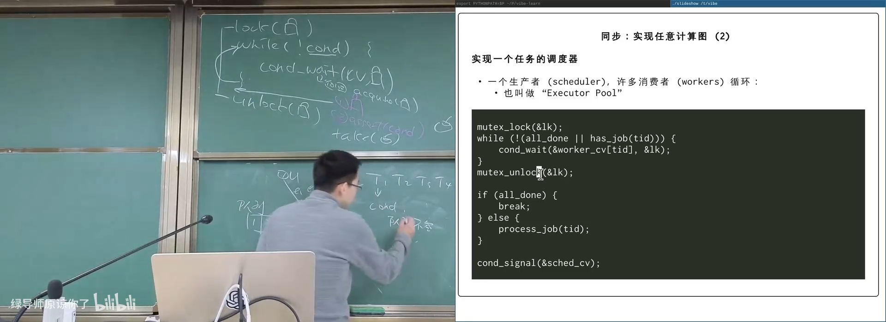
📷 Executor Pool 用任务队列消费就绪节点
回到原视频 (01:10:20)
7.4 Worker 的等待模板
mutex_lock(&lk);
while (!(all_done || has_job(tid))) {
cond_wait(&worker_cv[tid], &lk);
}
mutex_unlock(&lk);
if (all_done) {
return;
}
process_job(tid);
任务完成后再加锁更新依赖，并把可能的就绪任务放回队列。
flowchart TD
A["Worker 循环"] --> B["lock"]
B --> C{"有任务或全部完成？"}
C -- "否" --> D["cond_wait"]
D --> C
C -- "有任务" --> E["unlock + 执行任务"]
C -- "全部完成" --> F["退出"]
E --> G["lock 更新 DAG"]
G --> H["向后继队列添加就绪任务"]
H --> I["signal / broadcast"]
I --> A
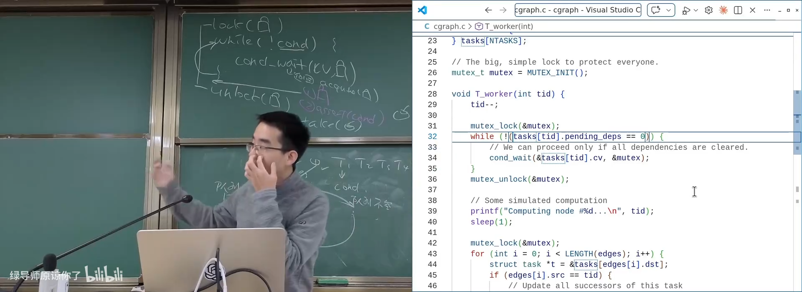
📷 Executor Pool 的 worker 条件等待与任务完成通知
回到原视频 (01:13:00)
7.5 锁的范围
(参考时间: 01:13)
真实 DAG 调度中：
- 从队列取任务、更新依赖时持锁；
- 真正计算任务时不持全局锁；
- 每个任务拥有自己的私有数据；
- 只对共享依赖图进行受保护访问。
这样既保证正确性，也保留多处理器并行度。
flowchart LR
A["lock：取任务"] --> B["unlock"]
B --> C["并行执行计算"]
C --> D["lock：更新依赖"]
D --> E["unlock"]
E --> F["继续循环"]
8. 总结：同步是并发的另一半
这一讲从互斥的局限出发，建立了完整同步机制：
- 互斥只保证 A、B 不并发，不能强制 A happens-before B；
- 同步通过等待条件建立确定的 happens-before；
join、同步电路、乐团和约定见面都是“条件握手”；- 自旋等待实现简单，但长期等待会浪费 CPU；
- 条件变量让线程在条件不成立时睡眠；
cond_wait原子地释放锁并睡眠，唤醒后重新获得锁；- 万能模板是
lock + while + wait与lock + update + broadcast + unlock； - 生产者消费者是绝大多数实际同步问题的基础模型；
- 有界缓冲区的条件分别是“有空位”和“有对象”；
signal可能唤醒错误线程，安全起步应使用broadcast；- 水分子、括号鱼等奇怪问题只需写清同步条件；
- DAG 是理解并行计算的通用模型；
- DAG 可以用“每节点线程 + 条件变量”或 Executor Pool 实现。
flowchart LR
A["互斥：解决数据竞争"] --> B["同步：控制事件顺序"]
B --> C["条件变量"]
C --> D["生产者消费者"]
C --> E["任意复杂同步条件"]
C --> F["DAG / 计算图"]
F --> G["节点线程模型"]
F --> H["Executor Pool"]
最终可以记住一句话：
无论同步问题多奇怪，先写出“当前线程继续执行的条件”，然后套用条件变量模板。
附：官方参考与延伸阅读
以下链接来自官方讲义第 15 讲及课堂内容：
阅读材料：
- Operating Systems: Three Easy Pieces 第 30 章，Condition Variables。
官方课程资料：
版权与署名：本讲课程材料由蒋炎岩（jyy）编写。课程讲义与幻灯片采用 Creative Commons BY-NC 4.0 许可；本电子书保留课程出处、作者署名与许可说明。